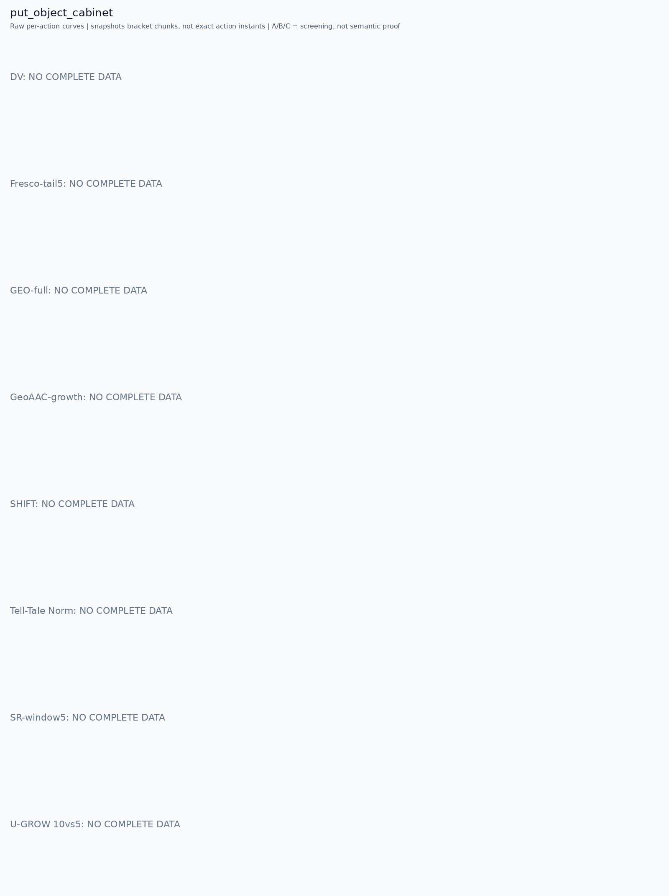

Only pre/post chunk frames were recorded. A visible stage transition is a candidate explanation, not proof of a contact instant. Main plots preserve every action score.
人工看图复核：dv [no_data] 该任务未取得完整可复算批次。
fresco [no_data] 该任务未取得完整可复算批次。
geo [no_data] 该任务未取得完整可复算批次。
geoaac [no_data] 该任务未取得完整可复算批次。
shift [no_data] 该任务未取得完整可复算批次。
norm [no_data] 该任务未取得完整可复算批次。
sr [no_data] 该任务未取得完整可复算批次。
ugrow [no_data] 该任务未取得完整可复算批次。
